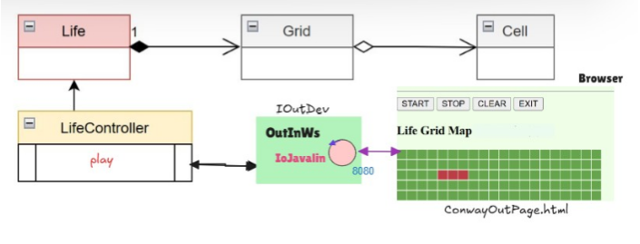

GIT repo: https://github.com/Tomassone/IngegneriaSistemiSoftware
GIT repo: https://github.com/Tomassone/IngegneriaSistemiSoftware
Il committente fissa i seguenti requisiti: 1. dotare il gioco Life. di una pagina HTML come dispositivo di I/O 2. la pagina deve costituire un componente esterno alla applicazione secondo la architettura riportata in IoJavalin esterno alla applicazione 3. il gestore del gioco sarà l’utente che ha aperto per primo (owner) una pagina HTML collegata al gioco. . In altre parole, solo la pagina dell’owner avrà pulsanti di comando START/STOP/CLEAN/EXIT attivi 4. la pagina HTML deve essere aggiornata in modo automatico man mano il gioco procede 5. un utente non owner che si collega mentre il gioco è in corso, dovrebbe vedere lo stato attuale della griglia in modo corretto 6. opzionalmente: la pagina HTML deve indicare se il gioco continua anche nel caso di griglia vuota o di config- urazione tabile 7. il deployment del gioco deve avvenire mediante Docker.
Dopo aver parlato col committente, formalizzo i seguenti modelli di Cell, Grid e Life (descrizione regole del gioco):
public interface ICell {
void setStatus(boolean v); //perchè la cella ha la capacità di settare il proprio stato a vivo o morto (true or false)
boolean isAlive(); //deve potere rispondere se gli chiedo se è viva o morta
void switchCellState(); //perchè la cella deve poter passare da viva a morta o da morta a viva
}
public interface IGrid {
/* entità composta da celle (rispondiamo alla domanda: è unitaria o composta?);
quante dimensioni ha? ne ha due;
quali sono queste dimensioni? altezza e lunghezza (tutte proprietà strutturali);
*/
public int getRowsNum(); /*[primitiva -> operazione che posso realizzare conoscendo solo
la rappresentazione interna dell'entità]*/
public int getColsNum(); //[primitiva]
public void setCellValue(int x, int y, boolean state); //[composta]
public ICell getCell(int x, int y); //[primitiva]
public boolean getCellValue(int x, int y); //[composta]
public void reset(); //[composta]
}
public interface LifeInterface {
/* Entità composta (da una griglia) */
/** Calcola l'evoluzione dello stato alla generazione successiva; */
void nextGeneration();
/** Restituisce lo stato di una cella specifica */
boolean isAlive(int row, int col);
/** Imposta lo stato di una cella */
void setCell(int row, int col, boolean alive);
/** Restituisce il numero di righe e colonne */
// int getRows();
// int getCols();
/** Restituisce la Cella */
ICell getCell(int x, int y);
/** Restituisce la grid */
IGrid getGrid();
/** pulisce */
void resetGrid();
/** Restituisce una rappresentazione grafica testuale della griglia*/
//public String gridRep( );
}
/* In Java, è valido il modello di interazione tramite chiamata
a funzione e passaggio di controllo. */
/* TEST PLANS:
Necessari per esprimere tutti quei
requisiti che le interfacce non sono
in grado di esprimere autonomamente.*/
//stato vivo/morto rappresentato come true/false
public class CellTest {
private ICell c;
@Before
public void setup() {
System.out.println("ConwayLifeTest | setup");
c = new Cell();
}
@After
public void down() {
System.out.println("ConwayLifeTest | down");
}
@Test
public void testCellAlive() {
System.out.println("ConwayLifeTest | doing alive");
c.setStatus(true);
boolean r = c.isAlive();
assertTrue(r);
}
@Test
public void testCellDead() {
System.out.println("ConwayLifeTest | doing dead");
c.setStatus(false);
boolean r = c.isAlive();
assertTrue( !r);
}
}
/* valori di lunghezza/larghezza strettamente positivi;
coordinate delle celle nel metodo get rispettoso di
un certo range;
metodo di reset funzionante come ci aspettiamo; */
public class GridTest {
private static final int nRows=5;
private static final int nCols=5;
private IGrid grid;
@Before
public void setup() {
System.out.println("GridTest | setup");
grid= new Grid(nRows,nCols);
}
@After
public void down() {
System.out.println("GridTest | down");
}
@Test
public void testDims() {
System.out.println("testDims ---------------------" );
int nr = grid.getRowsNum();
int nc = grid.getColsNum();
assertTrue( nr==nRows && nc==nCols );
}
@Test
public void testCGridCellValue() {
System.out.println("testCGridCellValue ---------------------" );
grid.setCellValue(0,0,true);
assertTrue( grid.getCellValue(0,0) );
assertFalse( grid.getCellValue(0,1) );
}
/*@Test
public void testGridRep() {
System.out.println("testGridRep ---------------------" );
System.out.println(""+grid);
assertTrue( grid.toString().startsWith(". . . . ."));
}
@Test
public void testPrintGrid() {
System.out.println("testPrintGrid ---------------------" );
grid.setCellValue(0,0,true);
grid.setCellValue(0,1,true);
grid.setCellValue(0,2,true);
grid.setCellValue(0,3,true);
grid.setCellValue(0,4,true);
//grid.printGrid();
}*/
@Test
public void testReset() {
System.out.println("GridTest | testReset");
grid.setCellValue(0,0,true);
grid.setCellValue(0,1,true);
grid.setCellValue(0,2,true);
grid.setCellValue(0,3,true);
grid.setCellValue(0,4,true);
grid.reset();
assertFalse(grid.getCellValue(0,0));
assertFalse(grid.getCellValue(0,1));
assertFalse(grid.getCellValue(0,2));
assertFalse(grid.getCellValue(0,3));
assertFalse(grid.getCellValue(0,4));
}
}
public class ConwayLifeTest {
private static final int nRows=5;
private static final int nCols=5;
private LifeInterface lifemodel;
@Before
public void setup() {
System.out.println("ConwayLifeTest | setup");
lifemodel = Life.CreateLife(nRows,nCols);
}
@After
public void down() {
System.out.println("ConwayLifeTest | down");
}
//@Test
public void testAppl() {
LifeInterface gameModel = new Life(nRows, nCols);
IOutDev outputDevice = new MockOutdev();
GameController lifeController = new LifeController(gameModel, outputDevice);
int genTime = lifeController.getGenTime();
lifeController.switchCellState(2, 1);
lifeController.switchCellState(2, 2);
lifeController.switchCellState(2, 3);
lifeController.onStart();
//gameModel.nextGeneration();
int nstep = 4;
int delay = genTime * nstep;
lifeController.onStart();
CommUtils.delay(delay);
lifeController.onStop();
assertTrue( lifeController.numEpoch() == (nstep-1) );
lifeController.onClear();
outputDevice.close();
assertTrue( lifeController.numEpoch() == 0 );
// MainConwayLifeJava app = new MainConwayLifeJava();
// app.configureTheSystemWitMockOutdev();
}
@Test
public void testOscilla() {
System.out.println("testOscilla ---------" );
// Configurazione orizzontale
lifemodel.setCell(2, 1, true);
lifemodel.setCell(2, 2, true);
lifemodel.setCell(2, 3, true);
System.out.println("testOscilla | Stato Iniziale:\n" + lifemodel.getGrid());
lifemodel.nextGeneration();
System.out.println("testOscilla | after 1 gen:\n" + lifemodel.getGrid());
// Verifica che sia diventato verticale
assertTrue(lifemodel.isAlive(1, 2));
assertTrue(lifemodel.isAlive(2, 2));
assertTrue(lifemodel.isAlive(3, 2));
assertFalse(lifemodel.isAlive(2, 1));
lifemodel.nextGeneration();
System.out.println("testOscilla | after 2 gen :\n" + lifemodel.getGrid());
// Verifica che sia tornato orizzontale (Periodo 2)
assertTrue(lifemodel.isAlive(2, 1));
assertTrue(lifemodel.isAlive(2, 2));
assertTrue(lifemodel.isAlive(2, 3));
}

Tramite piattaforma docker (file forniti nel repository).
GIT repo: https://github.com/Tomassone/IngegneriaSistemiSoftware